Ravenclaw
La casa que cuidaba como si fuera su propia familia.

Algunas personas dejan Hogwarts al terminar sus años en el castillo. Otras terminan convirtiéndose en parte de él.
Lucas Nott era muchas cosas al mismo tiempo. Era Ravenclaw. Prefecto. Capitán. Hermano. Novio. Amigo.
Podía pasar de hablar de una banda durante demasiado tiempo a discutir una jugada de Quidditch, estudiar un hechizo de Defensa Contra las Artes Oscuras o preocuparse porque alguien de su casa no estuviera bien.
Estas páginas no intentan resumirlo. Son solamente pedazos de la vida que dejó en las personas que lo conocieron.

probably talking about Quidditch

one of those days

Hogwarts, 2005

La casa que cuidaba como si fuera su propia familia.
Una de las partes más importantes de su vida en Hogwarts.
Su futuro siempre estuvo orientado hacia la defensa mágica.
Bandas, discos, canciones repetidas demasiadas veces.
Aunque definitivamente no era la única materia que disfrutaba.
Rhea, su hermana, sus amigos, Ravenclaw y su equipo.


Probablemente todos terminarían escuchando rock, quisieran o no. La música formaba parte de su estilo, de su habitación, de su ropa y de esos pequeños detalles que hacían imposible confundir sus cosas con las de otra persona.
Si había un lugar donde Lucas parecía completamente en casa, era en el campo. Quidditch significaba competir, entrenar, discutir estrategias y, sobre todo, cuidar al equipo que terminó convirtiéndose en otra parte de su familia.
 Captain #16
Captain #16


 Ravenclaw
Ravenclaw


Para Lucas, ser capitán nunca fue solamente llevar un título. El equipo era suyo para proteger, apoyar y mantener unido. Ganaran o perdieran, seguían siendo Ravenclaw.
Lucas tenía claro qué quería hacer después de Hogwarts. Quería convertirse en Auror.
No sorprende que algunas de sus materias favoritas fueran precisamente aquellas que más podían acercarlo a ese futuro.


Graduate Hogwarts.
Auror training.
Try not to get killed.
Apparently important.
Había muchas cosas que Lucas quería. Pero había personas que siempre estuvieron por encima de cualquiera de ellas.
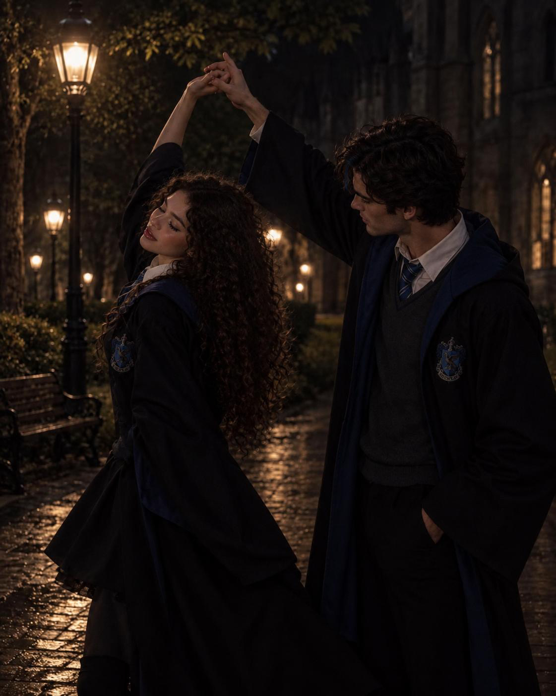
Rhea fue una de las personas que Lucas amó profundamente.

De todas las personas que formaron parte de su vida, su hermana ocupaba un lugar que nadie más podía ocupar. Era su persona más preciada, alguien a quien quería cuidar incluso cuando probablemente ella insistía en que no necesitaba que lo hiciera.
Para Lucas, Ravenclaw nunca fue solamente azul, plata y un dormitorio dentro del castillo. Eran las personas. Como prefecto y capitán, sentía una enorme responsabilidad por su casa y especialmente por quienes formaban parte del equipo.
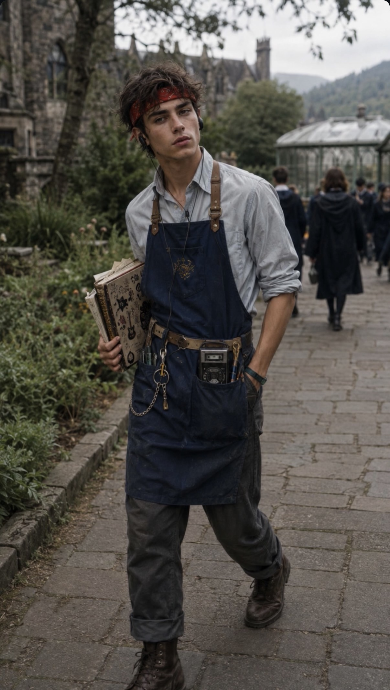
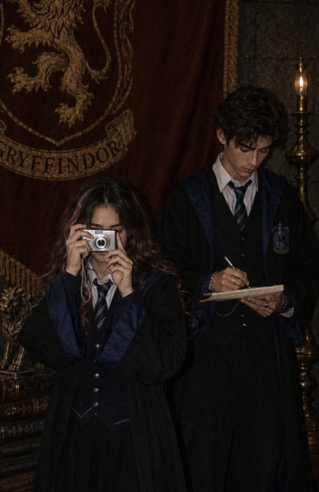
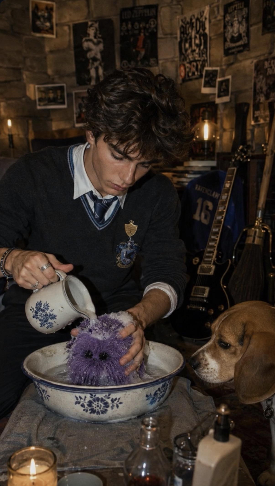
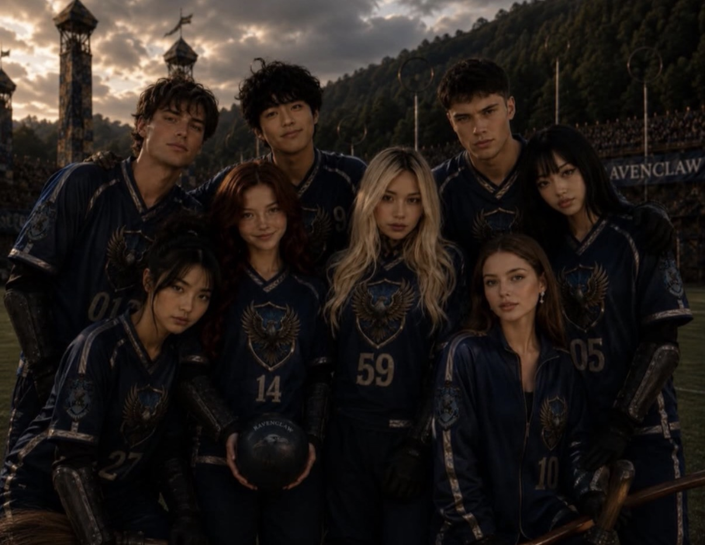


“No importaba si eras nuevo, si habías perdido un partido o si simplemente estabas teniendo un mal día. Para Lucas seguías siendo uno de los suyos.”
No existe una sola versión de una persona. Estos son algunos de los Lucas que quedaron guardados en la memoria de quienes lo conocieron.
“Conocí a Lucas en una etapa de mi vida que nunca imaginé que terminaría significando tanto para mí. Él era mi compañero y una de las personas que más quería. Siempre estaba haciendo bromas, sacándome una sonrisa y, simplemente, siendo tan él. Todavía me acuerdo de aquel 15 de junio, cuando me pidió que fuera su novia y me dijo “te amo” por primera vez. Es un día que, por muchas cosas que pasen, sé que siempre voy a recordar. Me siento muy afortunada de haber podido conocer esa parte de él, esa que tuve la oportunidad de conocer de una manera tan especial y que voy a extrañar muchísimo. No me arrepiento de haberlo conocido ni de haberle dicho que sí aquel día. A Lucas le apasionaba el Quidditch y siempre le ponía muchísimo empeño. También le gustaba mucho el rock y tocar música. Quiero que lo recordemos por quien era: por su forma de ser, por las cosas que le apasionaban, por las risas y por todos los momentos que nos dejó. Que su recuerdo no se quede solamente en la tristeza de su partida, sino también en todo lo bonito que fue mientras estuvo con nosotros.”
— Rhea“Nunca creí que algún día terminaría entrando al Quidditch. De hecho, al principio ni siquiera entendía del todo su reglamento; veía los partidos, escuchaba hablar de las posiciones y las jugadas, pero todo aquello me parecía un mundo completamente ajeno a mí. Y entonces, apenas unos días después, un chico, con una emoción que todavía puedo recordar, me dijo simplemente: —Únete al Quidditch. No sabía qué hacer. Dudé, porque jamás había imaginado que yo pudiera formar parte de algo así. Pero, casi sin pensarlo demasiado, acepté. Y ahora, cuando miro hacia atrás, me cuesta creer que una decisión que tomé con tanta incertidumbre haya terminado significando tanto para mí. Porque no fue solamente entrar a un equipo. Fue encontrar un lugar que no sabía que estaba buscando. Fue conocer personas, compartir momentos, aprender a confiar, caer y volver a intentarlo. Fue descubrir una parte de mí que jamás habría conocido si aquel chico no se hubiera acercado aquel día.Fue gracias a él que conocí realmente todo esto. Él fue quien confió en mí cuando yo todavía no sabía si pertenecía a este lugar. Siempre estuvo ahí para apoyarme, incluso en los momentos en los que las cosas no salían como esperaba, incluso cuando perdíamos, cuando fallaba o cuando no lograba atrapar la Snitch. Quizás ya no pueda escuchar su voz animándome ni verlo allí, esperando el próximo partido, pero cada vez que esté en el aire buscando la Snitch, voy a recordar todo lo que me enseñó y la confianza que depositó en mí. Porque hay personas que, incluso después de irse, siguen encontrando la manera quedarse en nosotros.”
— Berenice Crouch“No sabía cómo empezar esto. La verdad es que nunca fuimos las personas más cercanas del mundo, ni compartimos tantos momentos como quizá me hubiera gustado, pero creo que eso no significa que una persona no pueda dejar un recuerdo importante en nosotros. Lucas fue mi amigo y también mi capitán de Quidditch. Y aunque nuestra amistad quizás no fue de esas que duran toda una vida llena de historias, hubo pequeños momentos que hoy tienen un significado especial para mí. Hay uno que sé que voy a recordar siempre: aquella vez que me dijiste que era la mejor golpeadora. Puede parecer una cosa pequeña, y probablemente para ti solo fueron unas palabras dichas en un momento cualquiera. Pero yo las recuerdo. Y ahora, después de tu partida, ese momento tiene un valor diferente. Es curioso cómo a veces son precisamente las cosas más sencillas las que terminan quedándose con nosotros. Ojalá hubiéramos tenido más tiempo para conocernos y compartir más cosas. Pero me quedo con lo que tuvimos, aunque haya sido poco. Y cuando vuelva a estar en una cancha de Quidditch, seguramente voy a acordarme de ti. Voy a recordar al capitán y, sobre todo, voy a recordar aquellas palabras que alguna vez me dijiste: que era la mejor golpeadora. Tal vez nunca supiste lo mucho que iba a recordar eso. Te quiero, Lucas. No fuimos inseparables, pero fuiste parte de mi historia, aunque haya sido por un pequeño momento. Y ese pequeño momento también merece quedarse.”
— Dei Wood“Para Lucas. Hay personas que llegan a nuestra vida sin avisar cuánto van a significar. Lucas fue una de ellas. Todavía me cuesta hablar de ti en pasado. Quizás porque una parte de mí sigue esperando encontrarte en algún pasillo, escuchar tu voz entre el ruido o verte aparecer con esa forma tan tuya de hacer que todo pareciera un poco más sencillo. No sé si alguna vez te dije cuánto significabas para mí. Probablemente no lo suficiente. Hay cosas que una cree que tendrá tiempo de decir después, hasta que ese después deja de existir. Me quedo con los momentos, con las conversaciones, con las risas y también con todas aquellas cosas pequeñas que quizás en su momento parecían insignificantes, pero que ahora guardo como si fueran tesoros. Tu ausencia dejó un espacio difícil de explicar. Uno que no se llena, simplemente se aprende a llevar. Y aunque el tiempo siga avanzando, aunque cambien los lugares y las personas, hay recuerdos que permanecen exactamente donde los dejamos. Tú eres uno de ellos. Espero que, donde sea que estés, sepas que fuiste querido. Que dejaste una huella. Que hubo alguien que te recordó incluso cuando dolía hacerlo. Gracias por haber sido parte de mi historia, Lucas. Quizás no tuve la oportunidad de despedirme como hubiera querido, pero si pudiera hacerlo ahora, solo te diría una cosa: te quiero muchísimo, eres, serás por siempre mi mejor amigo. Te extraño hoy mañana y siempre..”
— Eleonor Burke“Mis recuerdos son muy vagos. Es como si las fotos de mi memoria se fueran borrando cada vez que algo me lastima, pero hay algo que no se puede borrar: el recorrido que una persona deja por nuestra vida. Y hoy quiero dejar mi recuerdo de Lucas. Con Lucas compartí gran parte de mi tiempo en Quidditch. Hubo una época en la que me bajaban las cuentas constantemente, y recuerdo especialmente la última vez que me pasó. Cuando pude volver, le escribí muy emocionada y él se alivió. Me contó que había buscado una subcapitana porque no sabía si yo volvería. Yo le respondí que siempre vuelvo. Ese mismo día no sabíamos a quién elegir como subcapitana y los dos estuvimos de acuerdo en que fuera Katie. Al principio, Lucas hacía prácticamente todo: los entrenamientos, los informes y estaba pendiente del equipo. Si no era él, era Katie. Yo no era demasiado activa durante los entrenamientos; normalmente aparecía cuando empezábamos a hablar de cosas externas, cuando cambiábamos de tema cada cinco minutos o cuando de repente alguien empezaba a amenazar al resto con balazos y escopetazos. Recuerdo nuestros primeros partidos y lo desmotivados que llegábamos a quedar. Muchas veces nos culpábamos a nosotros mismos: “¿Por qué no hiciste esto?”, “¿Por qué hiciste esto?”, “Si hubiese hecho más…”. Y Lucas siempre estaba ahí para decirnos que no nos desanimáramos, que con más entrenamiento podríamos ganar, que ese no era el último partido y que teníamos que estar orgullosos de lo que habíamos conseguido. Pasamos de entrenar tres días a la semana a entrenar prácticamente todos los días. Todos queríamos ganar, pero también queríamos demostrarle a Lucas que lo estaba haciendo bien con su equipo.La primera vez que jugamos sin Lucas fue porque tenía cosas que hacer. Antes de irse nos dijo a Katie y a mí: “Tú y Lett podrán”.Ese mensaje se nos quedó marcado, especialmente después de que partió. Sinceramente, ese día nadie podía creerlo. Estábamos todos rotos y devastados por la noticia. El partido se acercaba y, aunque ninguno de nosotros podía, todos decidimos seguir por Lucas. No podíamos hacerlo, pero queríamos hacerlo, y a veces querer es más fuerte que poder. Katie y yo tampoco podíamos con todo al principio. Fue entonces cuando realmente sentí el peso de mi cargo como cocapitana. Los informes, las fotos, los titulares, saber quién estaría y quién no, estar pendiente de cualquier cambio… No siempre pude entrenarlos, pero también era difícil tener ganas de hacerlo. Así que intenté aportar de otras maneras. Aunque quizás lo hice tarde, con Katie nos apoyamos mutuamente. Estuvimos juntas con el equipo e intentamos mantenerlo unido. Y aunque durante las últimas semanas ya no entrenamos como antes, logramos saber qué se sentía conseguir una victoria. Creo que, aun así, no pudimos disfrutarla como debíamos.Lucas Nott fue prefecto, capitán de Quidditch y una persona que apoyó este anuario y muchas otras cosas más. Pero, por encima de todos esos títulos, para mí fue alguien amable, empático, que siempre quería ayudar, que se preocupaba por los demás y que sabía animar a quienes tenía a su alrededor. Estoy sinceramente agradecida con la vida por haberme cruzado con Lucas. Siempre voy a agradecer que me haya permitido ser su cocapitana, compartir con él y formar parte de ese equipo. Quizás mis recuerdos algún día sigan borrándose, quizás algunas fotos desaparezcan y algunos detalles se vuelvan difíciles de recordar. Pero hay cosas que no necesitan permanecer intactas en la memoria para seguir significando algo Porque Lucas dejó un recorrido en nuestras vidas. Y yo quiero quedarme con eso. “Siempre vuelvo.” Porque aquella vez se lo dije a Lucas sin saber todo lo que esas palabras terminarían significando.”
— Colette Black“Puede parecer un recuerdo pequeño, pero para mí significa mucho, porque fue uno de esos momentos que terminaron convirtiéndose en una parte de mi Aún me acuerdo de cuando entre todos los prefectos: Lucas, Elizabeth, Aemma, Mallory y yo, decidimos bajarnos la edad y ponernos días consecutivos de octubre. La idea de Lucas era que nos conociéramos desde pequeños, para luego crecer juntos, entrar a ese vagón del tren y encontrarnos con las chicas. Aún recuerdo cuando aceptó y después, contó que debía decírselo a su hermana menor para ponerse de acuerdo con el Lore, decidió llamar a su hermana Layla algo tarde si mi memoria no falla y ella terminó levantándose. Ese día reímos muchísimo, y todavía lo tengo muy claro en mi memoria Quiero que todos sepan eso, por haber estado en mi vida, por cada momento compartido, por las risas y por todos esos recuerdos del quidditch aunque se que no pude mostrar todo mi potencial ante ti Lucas, quiero que sepas que te agradezco por ser parte de mi vida.”
— Minho Black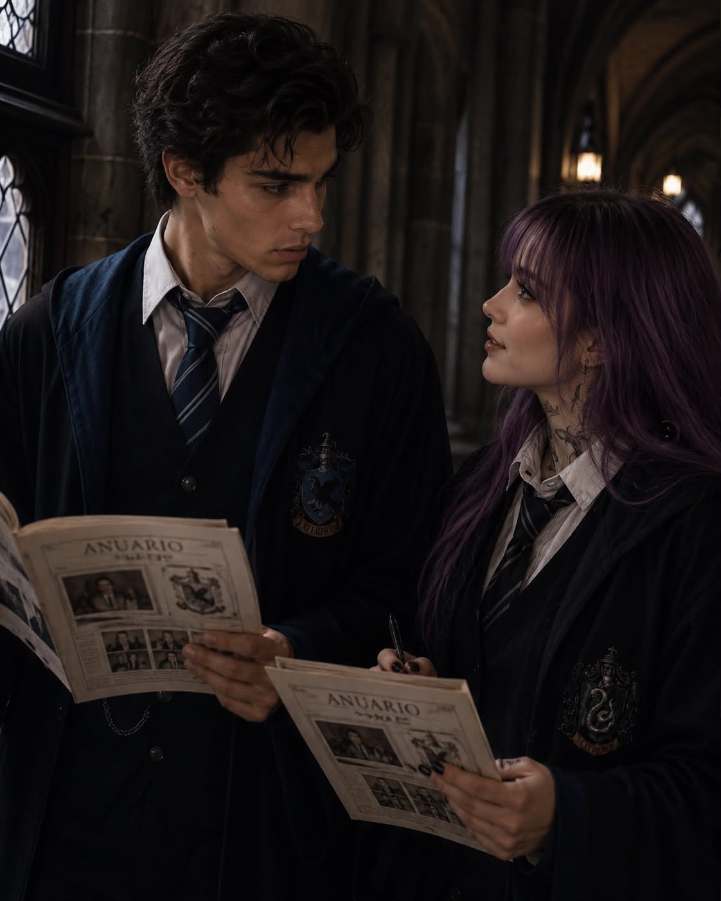
La música sonando demasiado alto.
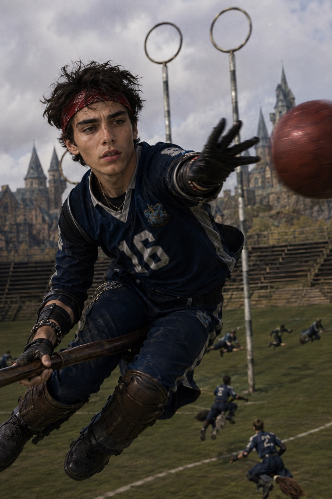
El uniforme de Quidditch con el #16.
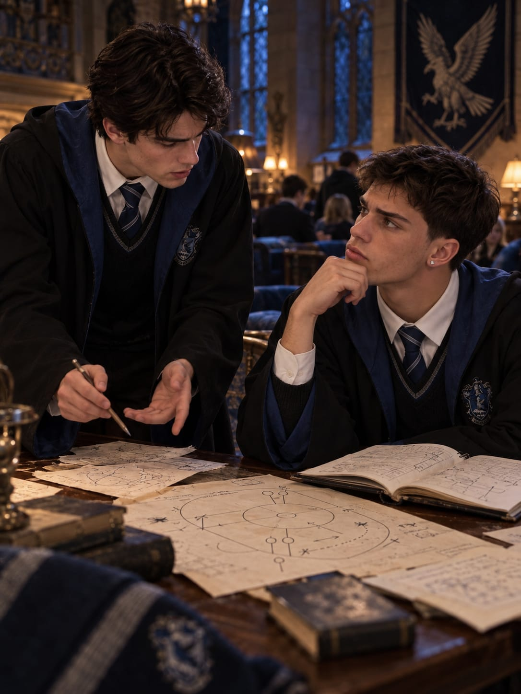
Discutir estrategias como si cada partido fuera una final.
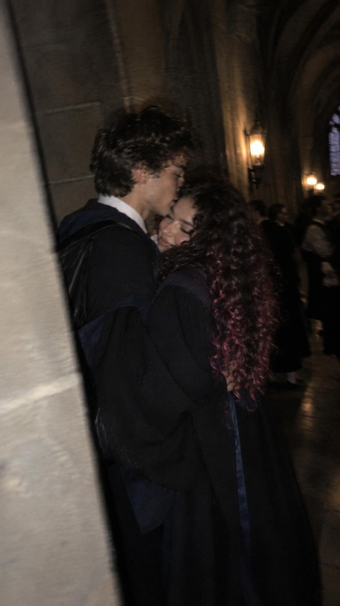
Encontrarlo con Rhea cuando se suponía que debía estar haciendo otra cosa.
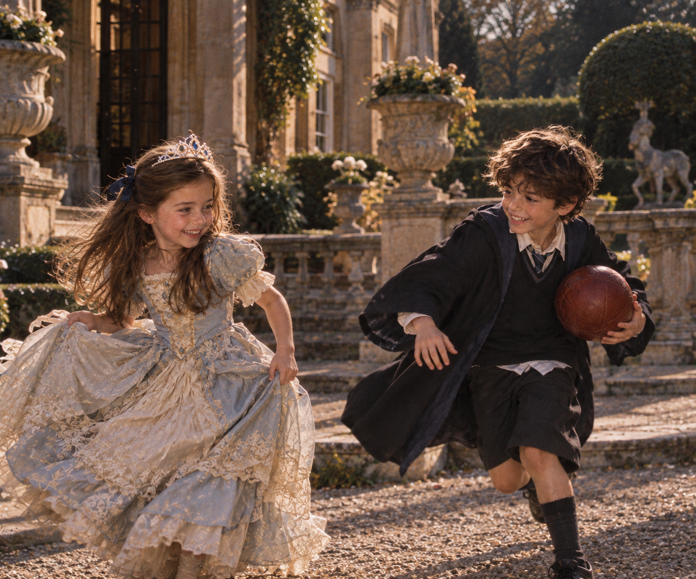
Estar pendiente de su hermana aunque fingiera que no.

Defender Ravenclaw incluso cuando nadie se lo pedía.
Pasar tiempo con du rizada favorita lo era todo psra el.
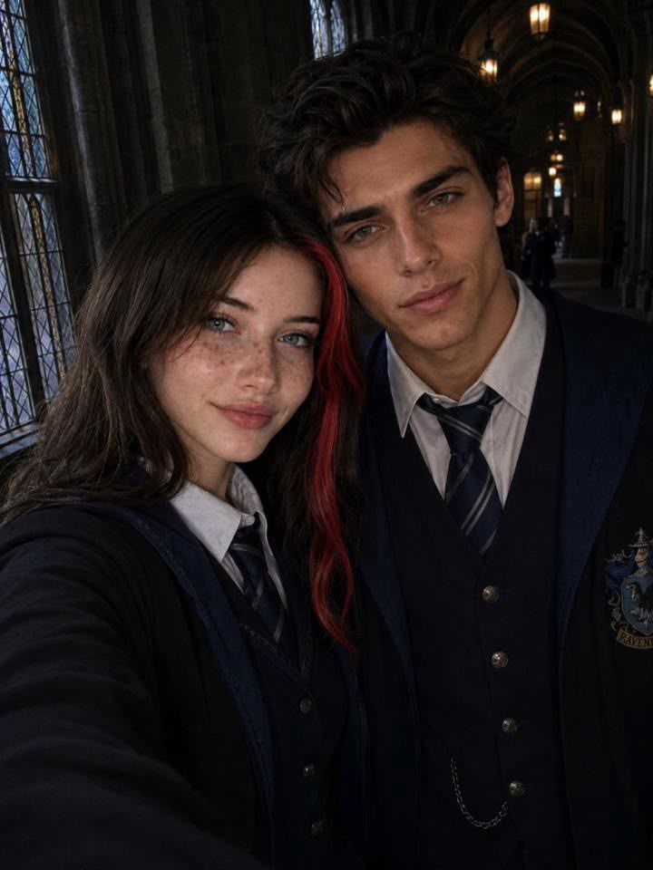
Y demasiados momentos que nunca llegaron a una fotografía.

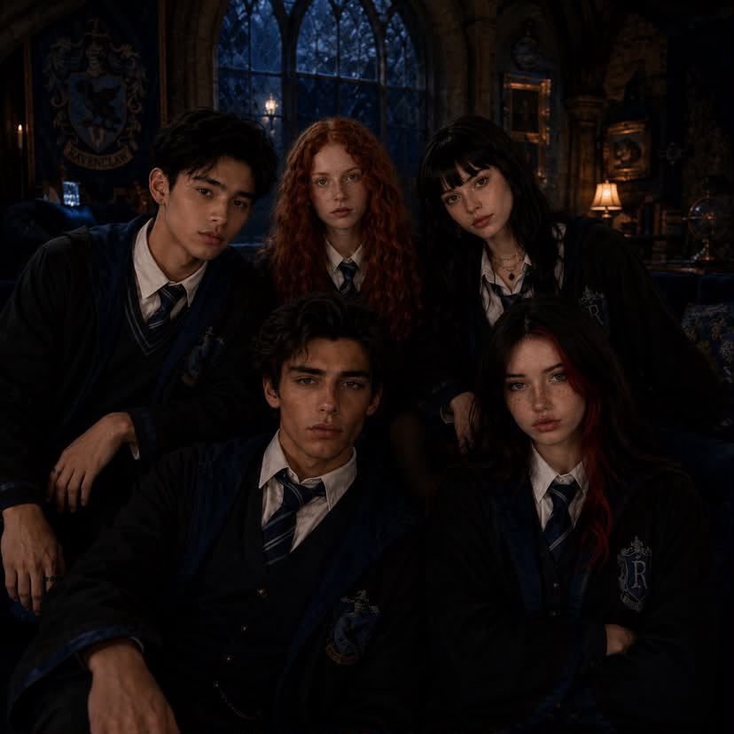
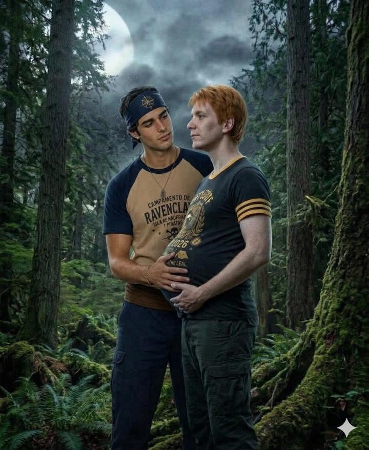
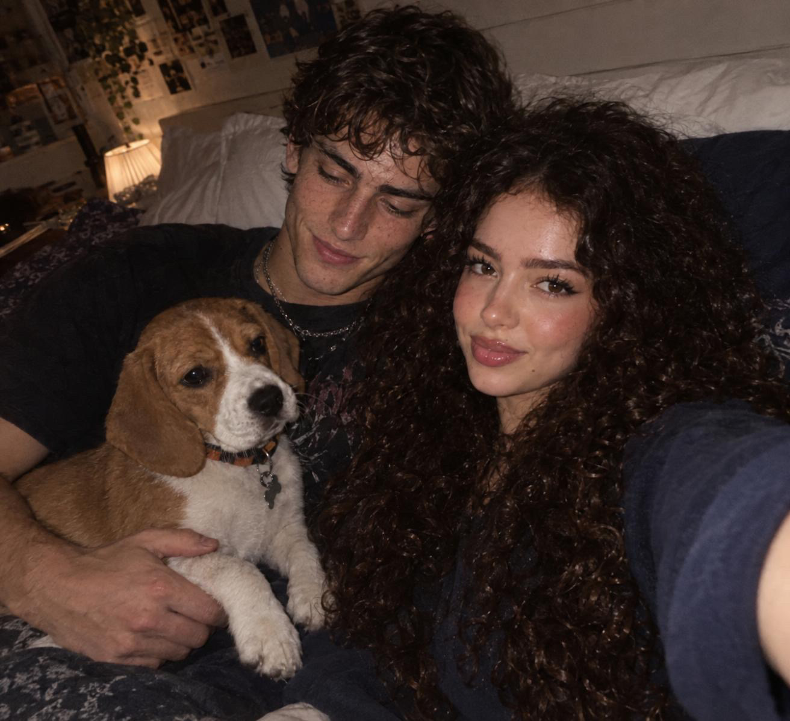

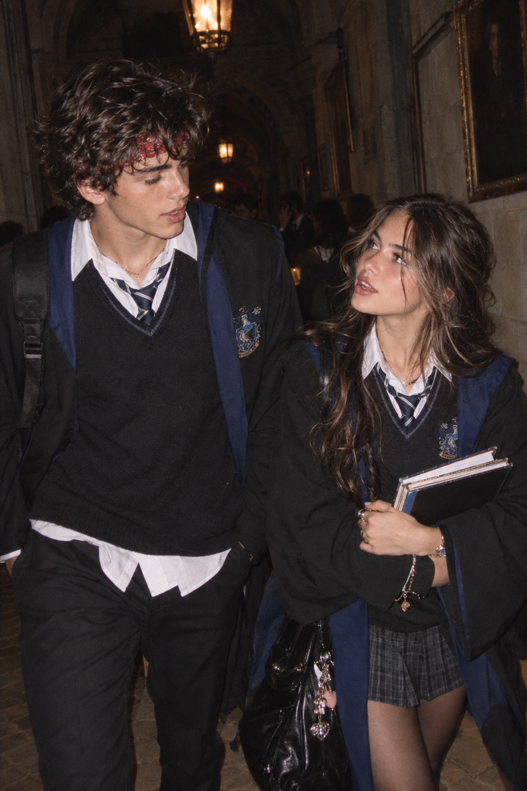

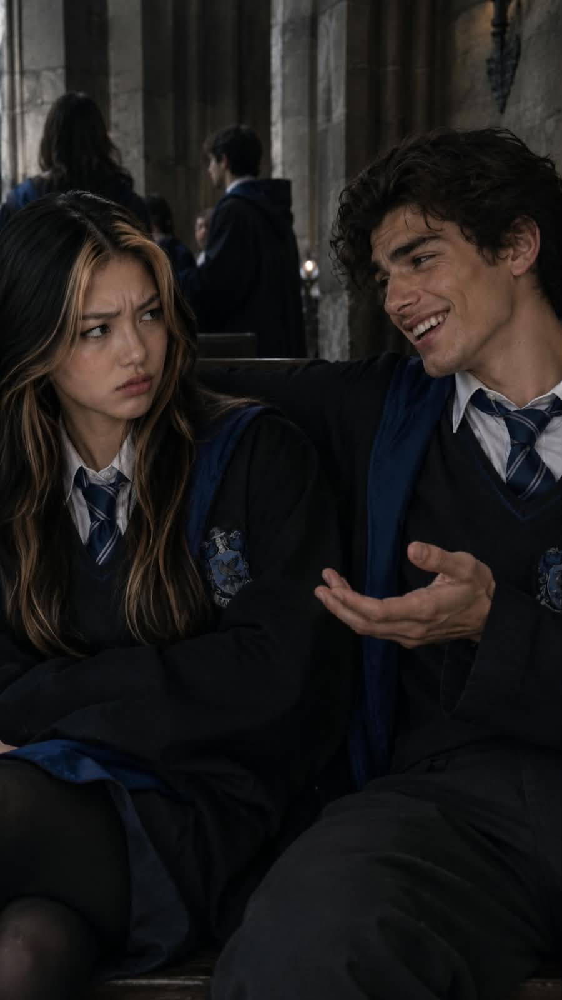
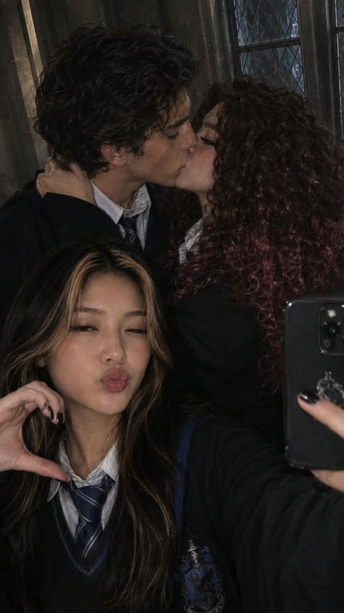